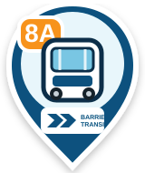
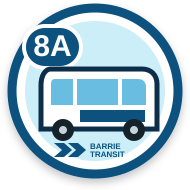
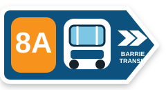
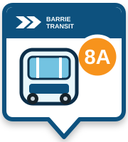

Barrie Transit bus marker options
Sample route: 8A

1. Classic pin
Most familiar map-marker shape

2. Roundel
Strongest visibility at small sizes

3. Directional
Naturally communicates bus heading

4. Platform card
Best match for terminal signage